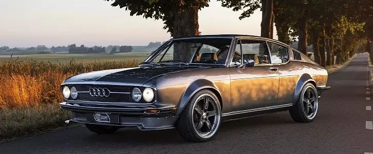

WebP — формат сжатия изображений как с потерями, так и без потерь, предложенный компанией Google Inc. в 2010 году.
Поддерживается браузерами Google Chrome, Opera и Firefox (с версии 65).
Не поддерживается браузерами Safari Mozilla и IE.
Попробуйте ниже сравнить 2 картинки:
1я картинка:
2я картинка:
Для среднестатистического пользователя видно, что разницу очень трудно уловить невооруженным глазом.
А между тем, первое изображение в сравнении со вторым имеет едва уловимые для зрения дефекты картинки и небольшие искажения в детализации
Однако это позволяет нам снизить вес картинки на 25%, без видимых потерь качества.
Еще 1 пример.
1й вариант:
2й вариант:
Первое изображение с теми же достоинствами, что и второе, весит в 2 раза меньше.